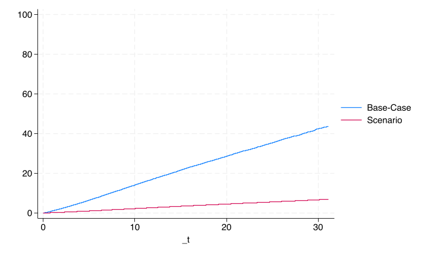

Synthesis#
Art, Science, Morality#
1. Input
\
2. Processing -> 4. Art -> 5. Science -> 6. Morality
/
3. Output -> Feedback

Life & cybernetics. The “Arts” encode aesthetics, religion, theology, and spirituality of mankind throughout history & have the distinguishing feature of reverence. It is the irreverent sciences that make inferences strictly by testing the present against historical data. Morality seeks deliverance from the evil deeds of history, present, and future. It borrows from science by interpreting then critizing history & from the arts by reinterpreting everything afresh “as if experienced first hand.But its a third layer of abstraction, whereas art is the first level of abstraction that reharms life as experienced#
Show code cell source
qui {
clear
rm code.png
global repo "https://raw.githubusercontent.com/abikesa/philosophy/main/kitabo/ensi/data/"
if 0 {
See 'pdfs/Work Note.png' for App
//1. data-analysis: cox-regression (rdc restricted-access)
stcox var1-58, basesurv(s0_nondonor)
matrix b=e(b)
mkmat beta1-58, matrix(b_nondonor)
keep _t s0_nondonor
export delimited s0_nondonor.csv, replace
}
//2. processing: beta-coefficients (zero disclosure-risk)
import delimited "${repo}b_nondonor.csv", clear
local i = 1
foreach var of varlist * { // this loops over all variables in the dataset
rename `var' var`i'
local i = `i' + 1
}
mkmat var1-var58, matrix(beta)
//3. flexing: scenario-vector (demonstration-only; app for eui)
import delimited "${repo}SV_nondonor.csv", clear
local i = 1
foreach var of varlist * { // this loops over all variables in the dataset
rename `var' var`i'
local i = `i' + 1
}
mkmat var1-var58, matrix(SV)
//4. art: base-case (embodies, realizes, transcends usual stuff)
import delimited "${repo}s0_nondonor.csv", clear
l in 1/10
g f0 = (1 - s0_nondonor)*100
//5. science: logHR-se.logHR (decodes everything, communicates to fellows)
matrix logHR=beta*SV'
matrix list logHR
//6. morality: threshold, draw-the-line (all 'bout dre for the eui)
g f1 = f0*exp(logHR[1,1])
line f0 f1 _t, ///
sort connect(step step) ylab(0(20)100) ///
legend(lab(1 "Base-Case") lab(2 "Scenario"))
graph export ../figures/code.png, replace
}
Show code cell output
file /Users/apollo/.stata_kernel_cache/graph1.svg saved as SVG format
file /Users/apollo/.stata_kernel_cache/graph1.pdf saved as PDF format

import delimited "${repo}beta_coefficients_58.csv", clear
list variable
Show code cell output
(encoding automatically selected: ISO-8859-1)
(2 vars, 58 obs)
+-----------------------------+
| variable |
|-----------------------------|
1. | diabetes_No |
2. | diabetes_Yes |
3. | insulin_No |
4. | insulin_Yes |
5. | dia_pill_No |
|-----------------------------|
6. | dia_pill_Yes |
7. | hypertension_No |
8. | hypertension_Yes |
9. | hypertension_Don't_Know |
10. | hbp_pill_No |
|-----------------------------|
11. | hbp_pill_Yes |
12. | smoke_No |
13. | smoke_Yes |
14. | income_adjusted_<5000 |
15. | income_adjusted_5000-9999 |
|-----------------------------|
16. | income_adjusted_10000-14999 |
17. | income_adjusted_15000-19999 |
18. | income_adjusted_20000-24999 |
19. | income_adjusted_25000-34999 |
20. | income_adjusted_35000-44999 |
|-----------------------------|
21. | income_adjusted_45000-54999 |
22. | income_adjusted_55000-64999 |
23. | income_adjusted_65000-74999 |
24. | income_adjusted_>20000 |
25. | <20000 |
|-----------------------------|
26. | income_adjusted_14 |
27. | income_adjusted_15 |
28. | Refused to answer |
29. | don't know |
30. | gender_Female |
|-----------------------------|
31. | gender_Male |
32. | race_White |
33. | race_Mexican_American |
34. | race_Other_Hispanic |
35. | race_Non-Hispanic_Black |
|-----------------------------|
36. | race_Other |
37. | hs_Good |
38. | hs_Excellent |
39. | hs_Very_Good |
40. | hs_Fair |
|-----------------------------|
41. | hs_Poor |
42. | Refused |
43. | 8 |
44. | don't know |
45. | education (none) |
|-----------------------------|
46. | k8 |
47. | Some High_School |
48. | High_School_Equivalent |
49. | Associate |
50. | College or more |
|-----------------------------|
51. | refused |
52. | age_c |
53. | bpxsar_c |
54. | bpxdar_c |
55. | bmi_centered |
|-----------------------------|
56. | egfr_c |
57. | uacr_c |
58. | ghb |
+-----------------------------+